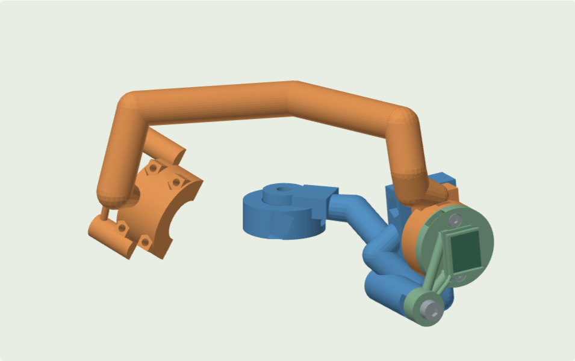

S12 · 右锁骨升降
连接 盘 C05-02（原 A06-01） · H008（骨架／右锁骨前后中间架） → 盘 C03-01（原 A06-04） · X062（骨架／右锁骨）。盘号沿用原装配说明；本次试印仅替换其中 X062。

| 取件位置 | 名称 / 原始键 | 本步用途 / 状态 |
|---|---|---|
| 盘 C05-02（原 A06-01） · H008（骨架／右锁骨前后中间架） | frame/clavicle_r.protract_frame | 已在 S11 取用，直接使用已装骨架。一体骨架；已包含 右锁骨前后/旋转侧叉耳、右锁骨升降/固定侧关节座 |
| 盘 C03-01（原 A06-04） · X062（骨架／右锁骨） | frame/clavicle_r | 本步新取。一体骨架；已包含 右肩／上臂/P_固定半壳、右锁骨升降/旋转侧叉耳 |
| 盘 C12-14（原 A06-12） · X028（右锁骨升降/传感板托夹） | clavicle_r.elevate/sensor_cassette | 本步新取。固定传感 PCB；先滑入板，再装到关节 |
| 盘 C14-07（原 A07-11） · N004（右锁骨升降/侧装磁铁座盖） | clavicle_r.elevate/magnet_cartridge | 本步新取。侧面装入并粘固磁铁；旋转侧用 2 枚 M2×5 固定 |
| 五金 / 磁铁 | 本步数量 | 位置 |
|---|---|---|
| M4大平垫圈：外径12、厚1 mm，实物能自由套过Φ4光杆 | 2 | 旋转叉耳两侧，每个支点 2 片 |
| A8不锈钢碟簧：8×4.2×0.4，自由高0.6 mm | 2 | 每个轴肩支点 2 片，相对安装 |
| M4普通平垫圈：外径9、厚0.8 mm，实物通孔验证 | 1 | 螺钉头下、碟簧外侧，每个支点 1 片 |
| 轴肩螺钉 Φ4×8 / M3×0.5，螺纹长6 mm；头Φ7×3，内六角3 mm | 1 | 轴肩摩擦支点，铰链 1 处 / 十字核心 4 处 |
| M3普通六角螺母（不要锁紧螺母替代外形） | 2 | 轴肩捕获窝、板托夹固定点，以及有 P/D 端轴时的摩擦调节槽 |
| M3大平垫圈：外径9、厚0.8 mm，实物通孔验证 | 1 | 固定座内侧，每个支点 1 片反力垫 |
| M3×8 内六角圆柱头螺钉；按CAD头径/头高核对 | 1 | 每只传感板托夹 1 枚；每个 P/D 摩擦块调节 1 枚 |
| M2普通六角螺母（不要锁紧螺母替代外形） | 2 | 本步各 M2 螺钉对应捕获窝，一螺钉配一螺母 |
| M2×5 内六角圆柱头螺钉；按CAD头径/头高核对 | 2 | N003 / N004 侧装磁铁座盖，每个 2 枚 |
| 径向两极磁铁 Φ6×2.5 mm；直径方向充磁，不能买轴向充磁 | 1 | 本步每个实测轴 1 颗，位于对应磁铁座 / 端盖 |
- 将 盘 C05-02（原 A06-01） · H008（骨架／右锁骨前后中间架） 的固定关节座与 盘 C03-01（原 A06-04） · X062（骨架／右锁骨） 的旋转叉耳摆到图示连接位置。侧槽尚未被挡住时，预装 1 枚 M3 螺母与 1 片 M3 反力垫。
- 按 G5 一体铰链 和 G1 轴肩层次 装 1 套轴肩结构。单个支点为 1 枚轴肩螺钉、2 片 M4 大垫、2 片 A8 碟簧、1 片 M4 普通垫，外加刚才放入的螺母和反力垫。
- 调整摩擦后，按 G4 给 盘 C14-07（原 A07-11） · N004（右锁骨升降/侧装磁铁座盖） 装 1 颗磁铁，固化后用 2 枚 M2×5 + 2 枚 M2 螺母固定到旋转侧。
- 把下表所列传感板装入 盘 C12-14（原 A06-12） · X028（右锁骨升降/传感板托夹），再用 1 枚 M3×8 + 1 枚 M3 螺母固定到固定侧。传感器与磁铁相对，不能把两者都固定到同一旋转骨段。
- 局部慢慢活动，确认每一相邻活动面不挤压垫片、PCB 和线束。按需要的手感调保持力即可；当前可用行程由实物相邻件与线束决定，软件 raw_limits 不是要求你硬拧到的机械行程。
| 电路端口 / 中央板位号 | 测量轴 | 传感板装在 | 对应磁铁装在 | 每根线建议长度 |
|---|---|---|---|---|
| 端口 A14 / J23 | clavicle_r.elevate/r0 | 盘 C12-14（原 A06-12） · X028（右锁骨升降/传感板托夹） | 盘 C14-07（原 A07-11） · N004（右锁骨升降/侧装磁铁座盖） | 275 mm × 5 根，首件后定长 |
本步完成检查：A14 标签对应正确；磁铁不相对载体打滑；转轴可手动摆动并保持；线先松放到背盒方向，留待走线章节统一固定。